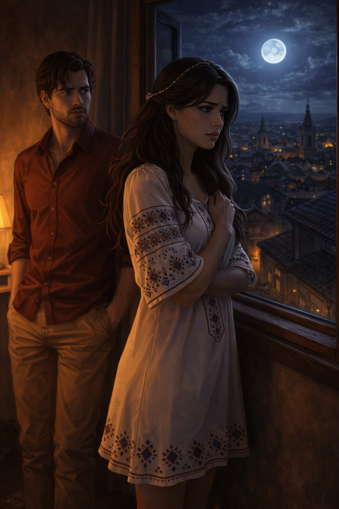

Поглавље 8: Тајна порука
Página individual del capítulo con lectura y ejercicios.

Наташа и Луис се враћају кући после шетње. Наташа прима поруку од Софије. Она је забринута.
"Луис, погледај оvo," каже Наташа и показује му поруку.
Порука гласи: "Наташа, сутра мораш напустити Београд. Десиће се нешто важно и не смеш бити у граду. Нећу бити у контакту дуго времена. Срећно."
Луис гледа Наташу. "Шта се дешава? Зашто Софија шаље овакву поруку?"
Наташа је узнемирена. "Не знам, али нешто није у реду."
Луис се сећа свог цртежа. Он пажљиво гледа цртеж Софије и апокалипса. Одједном примећује нешто.
"Наташа, погледај ово," каже Луис. "Овде има нешто написано ситним словима: 'Час дивљака'."
Наташа гледа цртеж. "Час дивљака? Шта то значи?"
Луис пита: "Да ли знаш нешто о томе?"
Наташа одговара: "Постоји легенда о Часу дивљака. Али не знам много. Можда треба да идемо у библиотеку да сазнамо више."
Луис се слаже. "Која је најпознатија библиотека у Београду?"
Наташа каже: "Национална библиотека Србије. Тамо има много старих књига и рукописа."
Они одлучују да оду у Националну библиотеку Србије. Библиотека је велика и импресивна. Наташа и Луис траже књиге о легендама Београда.
Наташа проналази књигу о Часу дивљака. Она чита: "Час дивљака је феномен који се дешава сваке хиљаду година. Тада људи губе контролу над собом и град постаје дивљи."
Луис је шокиран. "То је оно што је Софија планирала?"
Наташа је забринута. "Морамо сазнати више. Али не знам где да почнемо."
Луис гледа Наташу. "Морамо бити пажљиви. Нешто се лоше спрема."
Крај осмог поглавља.